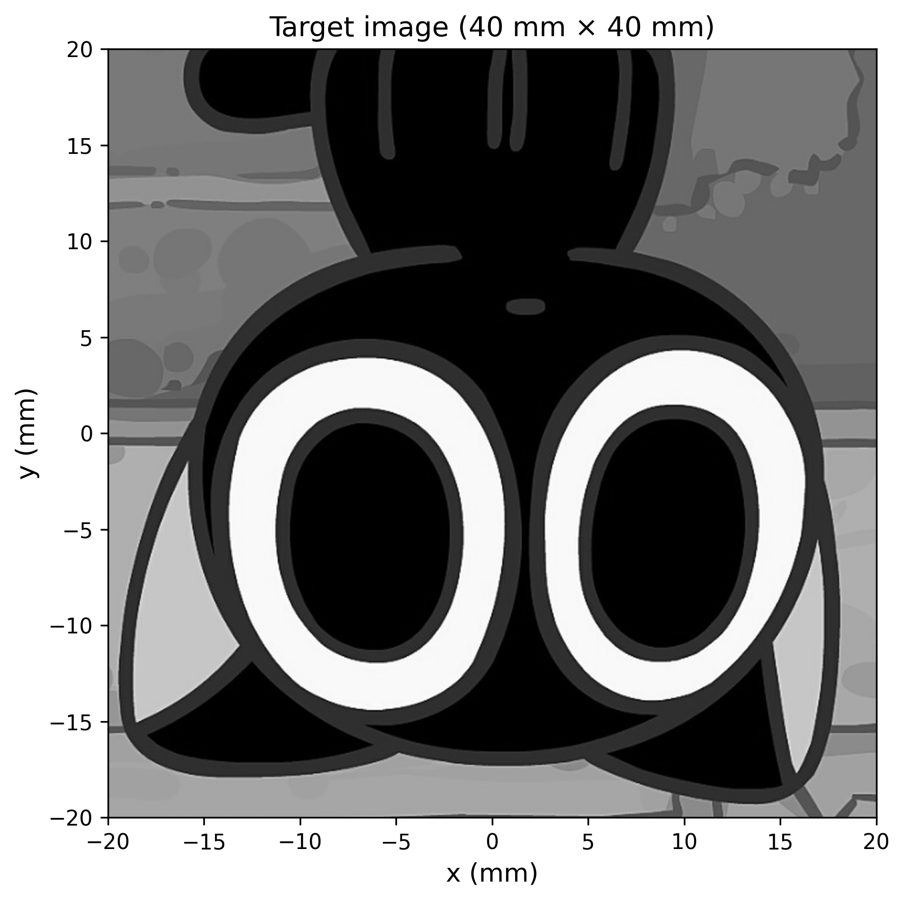
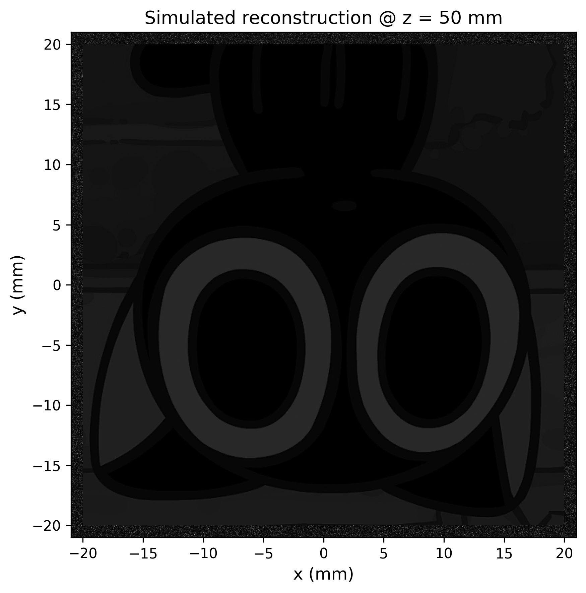
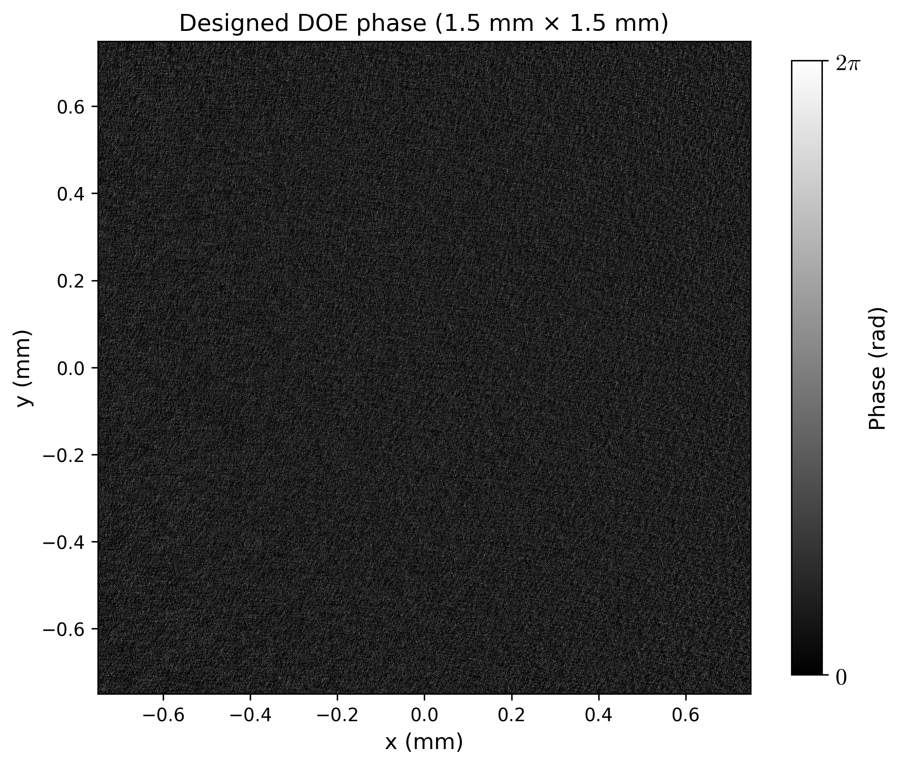
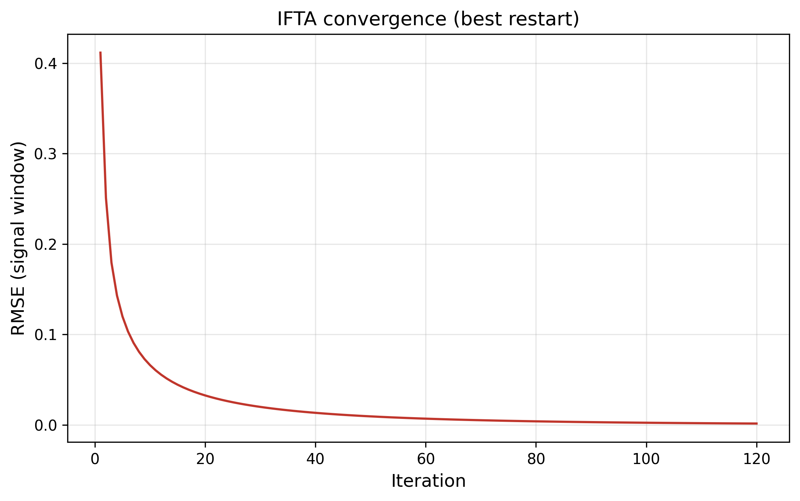

这是 信号窗口约束 IFTA + MRAF 的完整复现： 高斯光束入射 1.5 mm 纯相位衍射光学元件，自由空间传播 50 mm， 在 40 mm 区域再现目标灰度图像。120 次迭代后重建 RMSE 降至 0.0014，衍射效率 42.7%。 交付：Python 源码、相位数据、HTML 报告、结果图四件套。
一句话：用一片只调相位、不调振幅的透明片，把入射光"掰"成你想要的图案。
衍射光学元件（DOE）通过微结构改变入射光的相位分布。纯相位 DOE 只调制相位、不吸收光，理论上能量效率远高于振幅型全息图。 设计目标：给定入射光场和目标图像，求出 DOE 平面的相位分布 φ(x,y)， 使光传播到目标面后强度 |U|² 逼近目标。
从目标强度反推相位是经典的相位恢复问题——测量只给振幅， 相位信息丢失，解不唯一。Gerchberg-Saxton（1972）提出在 DOE 面与 像面之间来回做傅里叶变换，每一步施加已知约束（振幅），逐步收敛到 可行相位。IFTA 是其改进型，MRAF 进一步混合多尺度轴向滤波抑制散斑。
波长 λ = 1.064 µm，DOE 1.5×1.5 mm（1536×1536 px），自由空间 Fresnel 衍射 z = 50 mm，目标区域 40×40 mm。近轴近似误差约 2%， Nyquist 校验通过（最大坐标 27.2 mm > 半宽 20 mm），无混叠。
基模高斯光束，w₀ = 0.75 mm
纯相位 DOE → Fresnel 衍射 50 mm
40 mm 目标灰度图像
IFTA（Gerchberg-Saxton, 1972）+ MRAF 混合的关键参数表。
| 环节 | 参数 | 说明 |
|---|---|---|
| 波长 λ | 1.064 µm | 近红外，相位深度 ∝ 1/λ |
| DOE | 1.5×1.5 mm, 1536×1536 px | 像素 0.98 µm，纯相位 |
| 入射光 | 高斯 w₀ = 0.75 mm | DOE 半径 = 束腰半径 |
| 传播 | Fresnel, z = 50 mm | 近轴，误差 ~2% |
| 信号窗口 | 40×40 mm, 1128×1128 px | 窗内施加目标振幅，窗外自由 |
| MRAF 混合 | m = 0.8 | 抑制散斑 |
| 迭代 | 3 组随机初相 × 120 次 | 取 RMSE 最优 |
目标图像（罗小黑）与重建结果并排，连续相位与 256 级量化对比。




| 指标 | 连续相位 | 256 级量化 (8 bit) |
|---|---|---|
| 重建 RMSE（最优） | 0.0014 | 0.0040 |
| 衍射效率 η | 42.7% | 42.7% |
256 级量化性能几乎不变，兼容 SLM 与多台阶光刻。
信号窗口 IFTA + MRAF 的迭代循环，以及与标准 GS 的关键差异。
DOE 面光场 E·exp[iφ] 经 FFT 形式的 Fresnel 衍射传播到 50 mm 像面： U = FFT{ E·exp[iπ(x²+y²)/(λz)] }。
窗内按目标振幅约束，并以 m = 0.8 混合抑制散斑： U′_SW = [m·s·A_t + (1−m)|U|]·e^{i∠U}，s = √(E_SW/ΣA_t²) 做能量归一。 窗外保持自由，吸收残差。
约束后的光场逆 FFT 回 DOE 面，振幅重置为高斯入射 A_Gauss， 保留相位 φ，进入下一轮迭代。3 组随机初始相位各跑 120 次取最优。
| 项目 | 标准 GS | 本复现 (IFTA+MRAF) | 影响 |
|---|---|---|---|
| 振幅约束 | 全像面替换 | 仅信号窗口内约束 | 窗外散斑不污染窗内 |
| 散斑抑制 | 无 | MRAF 混合 m=0.8 | RMSE 进一步下降 |
| 能量归一 | 隐式 | 窗内能量显式归一 s | 避免能量被压出窗口 |
| 初始相位 | 单组 | 3 组随机取最优 | 降低陷入局部极小 |
Python 3.x + numpy + matplotlib + Pillow，三条命令出结果。
# 1. 装依赖 pip install numpy matplotlib Pillow # 2. 设计 + 仿真 + 出图 + 指标 (~8 min) python code/doe_design.py # 3. 生成自包含 HTML 报告 python code/gen_html_report_doe.py
@article{gerchberg1972,
title = {A practical algorithm for the determination of phase
from image and diffraction plane pictures},
author = {Gerchberg, R. W. and Saxton, W. O.},
journal = {Optik},
volume = {35},
pages = {237--246},
year = {1972}
}
本复现为独立实现，非官方代码。IFTA 基础方法源自 Gerchberg-Saxton (1972)， MRAF 混合与信号窗口约束为本复现采用的改进策略。代码与结果仅用于学术研究与学习交流。